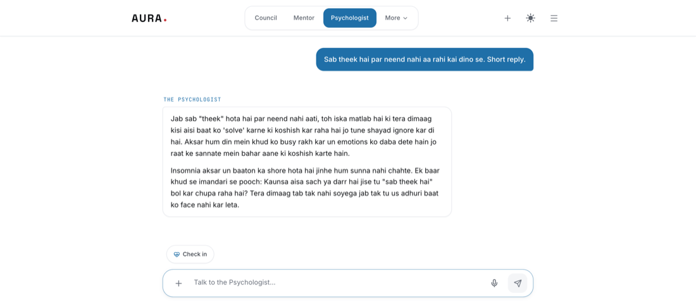
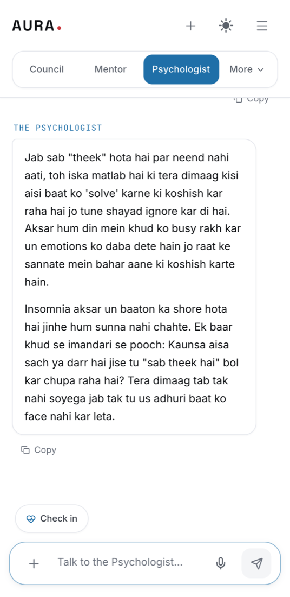

The Psychologist
Slower, warmer, and more interested in the question underneath the one you asked. With a mood check-in that stays on your device.
The same room, either way.
These are screenshots of The Psychologist running, not mock-ups drawn to look like it.


It asks before it advises
The other rooms move to a recommendation quickly. This one does not. It will ask what happened, when it started, and what you have already tried — because the useful answer usually sits under the first question, not on top of it.
The mood check-in
One tap on a five-point scale, and an optional line about why. Over a few weeks the small chart shows a pattern that is hard to see from inside a single bad day. The entries are written to the device and are never uploaded — there is no copy of them anywhere else.
An honest limit
This is not therapy and it is not a clinician. It is a good place to think out loud, and a bad place to be in a crisis. If you are in one, please reach a person — a doctor, a helpline, someone you trust.
Three ways in.
- “Sab theek hai, bas neend nahi aa rahi.”
- “I keep saying yes to things I do not want to do.”
- “Har choti baat pe gussa kyun aata hai aajkal?”